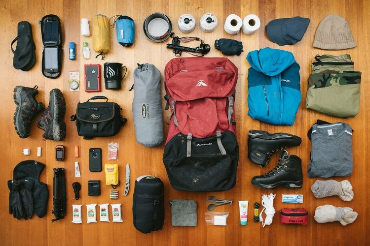
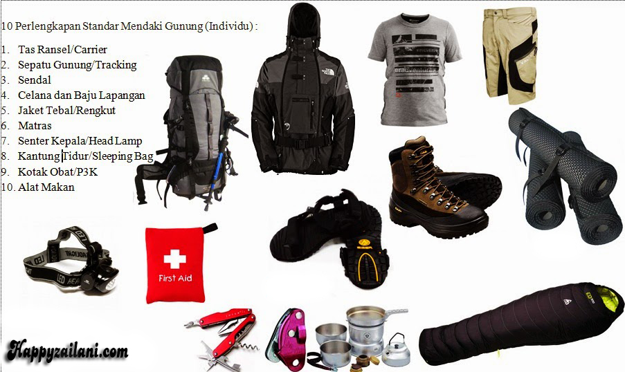
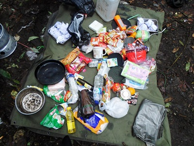

PERALATAN PRIBADI
- Carrier: Tas untuk membawa perlengkapan (min. 60L).
- Survival Kit: Alat bertahan hidup dalam kondisi darurat.
- Logistik: Makanan dan minuman (n+1 kebutuhan harian).
- Webbing: Alat pertolongan saat medan curam.
- Kotak P3K: Pertolongan pertama.
- Trash Bag: Untuk sampah dan melindungi barang dari basah.
- Sepatu: Kuat dan nyaman, lebih besar dari ukuran kaki.
- Sleeping Bag: Penghangat saat tidur.
- Ponco/Jas Hujan: Melindungi tubuh dan carrier dari hujan.
- Jaket: Menghangatkan, disarankan waterproof atau windproof.
- Celana Lapangan: Mudah kering, nyaman.
- Baju: Menyerap keringat, kaus kaki, baju ganti secukupnya.
- Penutup Kepala: Menghangatkan.
- Senter/Headlamp: Penerangan.
- Peralatan Masak dan Makan: Piring, gelas, sendok, dll.
- Alat Tulis: Buku dan pena untuk mencatat.
- Topi: Opsional untuk melindungi kepala dari panas.
- Tali: Untuk mengikat atau membuat bivak.

PERALATAN KELOMPOK
- Dome: Tenda perlindungan dari cuaca.
- Nesting dan Kompor: Peralatan masak; kompor minimal 1 per 4 orang.
- Bahan Bakar: Gas, parafin, atau spiritus, menyesuaikan kebutuhan.
- Kotak P3K: Pertolongan pertama.
- Perlengkapan Navigasi: Minimal 2 set untuk orientasi medan.
Isi Survival Kit:
- Peniti, Jarum Jahit, Benang Jahit: Menyambung kain atau luka.
- Kondom: Penampung air.
- Silet, Korek Api, Lilin: Membuat api.
- Peluit: Untuk memanggil bantuan.

LOGISTIK
- 1. Makanan
- Kebutuhan Energi Tinggi dan Praktis:
- Makanan Pokok: Nasi instan, mi instan, roti tawar, tortilla, atau pasta.
- Lauk Instan: Abon, sarden, kornet, rendang instan, tempe, tahu goreng kering.
- Makanan Kering: Kerupuk, keripik, kacang-kacangan, atau makanan ringan.
- Makanan Siap Saji: Paket makanan siap saji seperti kaleng survival atau makanan kemasan dehidrasi.
- Bahan Makanan Mentah (Jika Masak): Beras (secukupnya), sayuran yang tahan lama (kentang, wortel, kol), telur, bumbu dapur (garam, gula, kecap, cabai bubuk, dll.).
- Suplemen dan Tambahan: Cokelat batangan, energy bar, granola, atau protein bar. Susu bubuk atau susu cair instan (tetrapak). Selai kacang atau madu sebagai sumber energi.
- 2. Minuman
- Air Minum: Minimal 3-4 liter per orang per hari (tergantung durasi dan ketersediaan sumber air di jalur).
- Minuman Hangat: Kopi, teh, cokelat panas, atau jahe instan.
- Minuman Elektrolit: Minuman isotonik (kemasan bubuk atau siap minum).
- Minuman Penambah Energi: Energen, susu kental manis.
- 5. Cadangan Logistik
- Makanan Cadangan: Tambahan satu hari lebih banyak dari kebutuhan harian normal (n+1 aturan logistik).
- Air Cadangan: Jika memungkinkan, bawa botol cadangan atau sistem penyaringan air portable.
- Minuman Energi: Sachet isotonik atau tablet glukosa.
- 6. Tips untuk Membawa Logistik
- Prioritaskan Berat Ringan: Pilih makanan yang ringan tapi padat energi (contoh: oatmeal, energy bar, cokelat).
- Hindari Cepat Basi: Jangan membawa makanan basah atau mudah rusak seperti makanan berkuah tanpa kemasan tahan lama.
- Pengemasan Praktis: Gunakan ziplock atau wadah kedap udara untuk mengurangi berat dan menjaga makanan tetap segar. Bungkus kecil-kecil sesuai porsi per makan.
- Distribusi Barang: Logistik kelompok seperti bahan makanan utama, kompor, atau gas, sebaiknya dibagi rata ke masing-masing anggota tim.